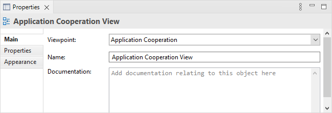
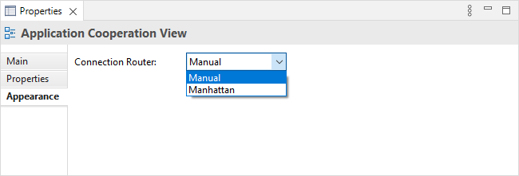

Selecting a View in the Model Tree or when open means that you can edit or view the following properties in the Properties Window.
The Main Tab

Main Properties for a View
| Viewpoint: | Select the Viewpoint for the View. For more information see Viewpoints |
| Name: | The name of the View. |
| Documentation: | A space to enter some documentation relating to this View. |
 In the "Documentation" text control, URLs that start with "http://" "https://" or "ftp://" will show as a hyperlink. Holding the Ctrl / Command key will change the cursor to a "hand" cursor and you can open the link in a Browser.
In the "Documentation" text control, URLs that start with "http://" "https://" or "ftp://" will show as a hyperlink. Holding the Ctrl / Command key will change the cursor to a "hand" cursor and you can open the link in a Browser.
The Properties Tab
For more information about creating and managing User Properties see User Properties.
The Appearance Tab

Appearance Properties for a View
| Connection Router: | Sets the type of connection router for the View. Options are: Manual - Straight line Manhattan - Routes using an orthogonal connector. For more information see Setting the Connection Router Type for a View. |